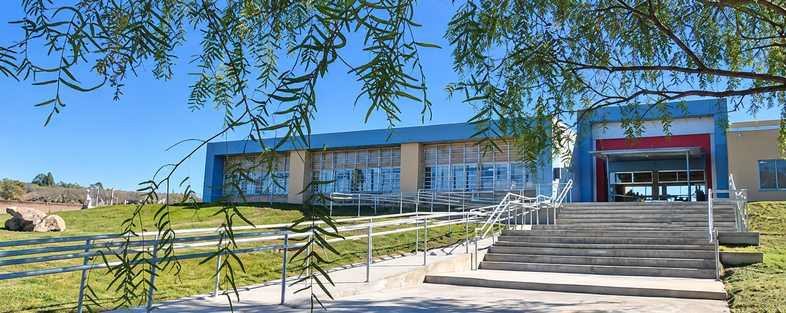
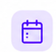

Inscripción
Requisitos y documentación para estudiantes que ingresan a la institución.
Ver información →

Un espacio organizado para consultar, descargar y preparar la documentación de nuestra comunidad educativa.
Accedé a cada trámite desde su sección correspondiente.
Consultá y descargá los modelos y recursos publicados.
Requisitos y documentación para estudiantes que ingresan a la institución.
Ver información →Información y documentación para estudiantes que continúan sus estudios.
Ver información →Descargá la plantilla orientativa y consultá cómo presentar la documentación.
Ver información →Información para solicitar una constancia de escolaridad.
Ver información →Información general sobre becas y programas de acompañamiento.
Ver información →Orientación para realizar trámites ante la institución.
Ver información →Cargá una fotografía del justificativo para revisarla y descargarla.
Ver información →Información y documentación relacionada con autorizaciones escolares.
Ver información →
Descargá el resumen orientativo y consultá el acuerdo institucional vigente.
Ver información →